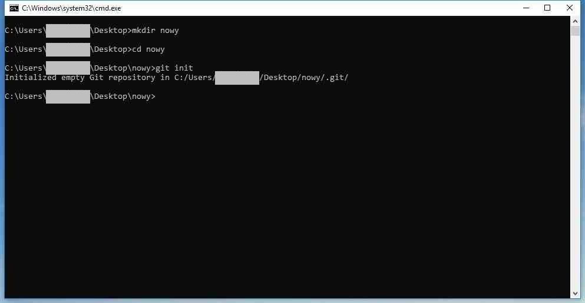
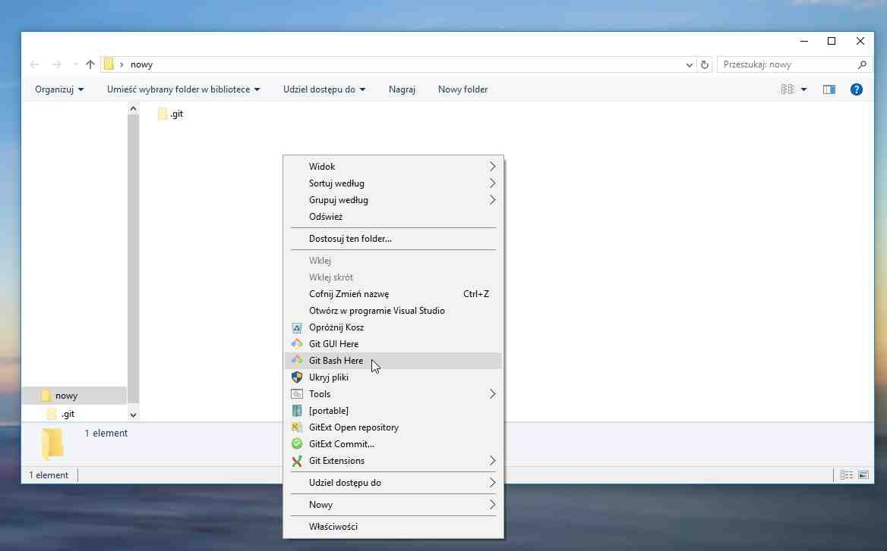

Tworzenie repozytorium
- Tworzymy nowy folder
mkdir nowy
- wchodzimy do tego folderu
cd nowy
- inicjalizujemy repozytorium
git init
- wchodzimy do folderu poprzez bash git-a


Dodawanie do kolejki
- sprawdzamy bieżący status
git status
- tworyzmy pliki
echo >> nowy.txtecho >> do_ukrycia.txt
- dodajemy pliki do kolejki
git add .
- sprawdzamy bieżący status
git status
- wprowadzamy zmiany do pliku i sprawdzamy bieżący status
git statusmamy dwie wersje pliku i musimy zdecydować co zrobić: usunąć którąś kopię, przywrócić oczekującą na zatwierdzenie lub ponownie dodać plik do kolejki oczekiwania
na czerwono - pliki nie śledzone
na zielono - pliki śledzone - tworzymy commit
git commit -m "Pierwsza rewizja"
Ignorowanie plików
- tworzymy plik z listą ignorowanych plików i folderów
nano .gitignore
- w edytorze nano wpisujemy ignorowane pliki / foldery
- sprawdzamy bieżący status
git statusbrakuje pliku do_ukrycia.txt, a pojawił się .gitignore
- usuwamy .gitignore
rm .gitignore
- sprawdzamy bieżący status
git statusplik do_ukrycia.txt jest widoczny
Modyfikowanie kolejki
- dodajemy pliki do kolejki
git add .
- sprawdzamy bieżący status
git status
- resetujemy kolejkę
git reset
- sprawdzamy bieżący status
git statuspo resecie kolejki wszystkie pliki, które w niej były stają się nie śledzone
- dodajemy pliki do kolejki
git add .
- sprawdzamy bieżący status
git status
- usuwamy z kolejki określony plik / pliki
git rm --cached do_ukrycia.txt
- sprawdzamy bieżący status
git statuspo usunięciu pliku z cache-u plik, który został usunięty staje się nie śledzony, a pozostałe nadal są śledzone